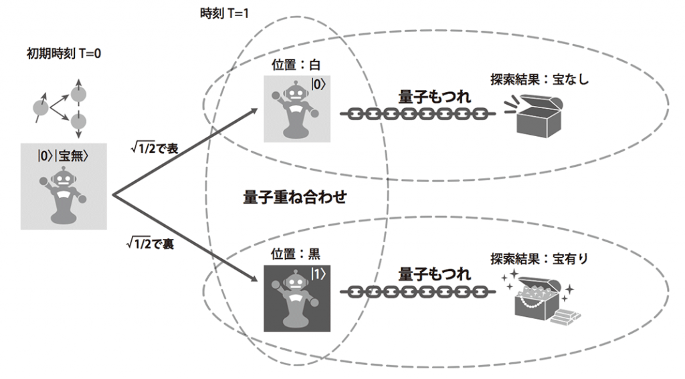

量子コンピュータAdCal
私はプログラム書くよりも物理現象のほうが興味があり、本屋で量子コンピュータの文字に惹かれて半年。 遅々として進まない勉強だが、このような機会ができたので色々整理します。 おそらく間違い等あると思いますので、そのときは指摘をお願いします。
追記：一番最初に書いた記事なので、本当に駄文ですね…… 画像の引用とかも多く、オリジナリティといった点で微妙ですがお付き合いいただければ幸いです。 内容があんまりにもひどいので、Yao.jlでのエンタングルメントでも作って、0から説明する記事作ります。
皆さん量子コンピュータって知っていますか？ おそらくここにいらっしゃったみなさんならご存知のことでしょう。 まぁ、なんか今のコンピュータよりすごいくらいは知っていると思います。 ここでは、大体下の２つのようなことを話してます。
- そもそも、本当に量子コンピュータは計算が早いのでしょうか？
- では、なんで量子コンピュータは計算が早いのでしょうか？
今のコンピュータで演算の早さを決めるのは主にCPUでしょう。 では、量子コンピュータのCPUはなんなのかというと無論量子回路です。
ふつうのコンピュータ（以降、古典コンピュータと呼ぶ）は電子回路を電圧の強弱を0と1に対応させて、1ビットとしていますね。トランジスタなどを用いて制御しています。
一方で量子コンピュータは、光子の偏光や超伝導素子のスピンの向きとかをいじります。 この自然現象（量子コンピュータは自然現象を操作するので、スパコンよりめちゃくちゃエコ） でいい感じに0と1を表現します。
とりあえず、分かりづらいかもですが、簡略なシュレディンガーの猫で表してみます。
1時間で50％の割合で猫が死ぬシステムがあるとしましょう。
さて、1時間後の猫はどうなっているでしょうか。
というのがシュレディンガーの猫ですね。1時間後、我々が猫を観測すると、死んでしまった猫 or 生存している猫、2つの状態に決定します。 これをそれぞれ 0と 1にわりあてるわけですね。 この状態を1ビット、量子コンピュータではqubit（キュービット）といい、連続させてqubitを増やしていきます。 ここからが古典コンピュータとの違いです。 この実験では観測する前、猫が死んでいる状態と生きている状態が重なっています。 この意味不明な状態をビットとしてもつことができます。これが重ね合わせの状態ですね。
この状態で色々演算すればいい感じにいくんじゃね？ というのが量子コンピュータです。 実際、この状態で演算することにより古典コンピュータにできないことができます。 0と1があるので、古典コンピュータと同じことができるし、さらに重ね合わせを用いて一部の計算をもっと早くしようということです。
この状態がどう作用するのかというと、こんな感じです。
これは1qubitの例です。ロボットの状態である白か黒は何度演算しても、白と黒あるいはその重ね合わせのみです。 故にこの演算は1qubitで示すことができます。 時間経過でコインを一度投げ、ロボット白か黒どちらにいくかという実験です。この確率はそれぞれ50％ずつですね。 Tが1ずつ増えるたびに行われるのは、アダマール変換といい、
\[ H |0〉= \frac{1}{\sqrt{2} } |0〉|0〉 + \frac{1}{\sqrt{2}}|1〉|1〉 \]
\[ H |1〉= \frac{1}{\sqrt{2} } |0〉|0〉 - \frac{1}{\sqrt{2}}|1〉|1〉 \]
という変換をします。これは量子ビットを操作しており、CPUでいうゲートを通ったという認識でいけます。 つまり、このゲートを通ることにより、重ね合わせの状態を作ります
すると、\( T=2 \)で状態が確定するのがわかります。 前刻の白、すなわち \( |0〉\)のアダマール変換と黒である \( |1〉\)のアダマール変換がそれぞれ、ロボットが黒マスを踏む確率を打ち消してしまいます。これにより、白である($ 0)に確定するわけですね。 次の \( T = 3 \)では、50%、50%ずつの重ね合わせの状態に再び戻ります。
このようにして、事象に相当する適切な操作を行うことにより、ある計算結果に収束していい感じの計算結果が得られるわけです。 また、この演算を何度も行うことにより、確率そのものを手に入れることもできます。 計算結果が確率分布によって決まるからですね。 古典コンピュータの場合、全事象を演算しなければなりません。 しかし、量子コンピュータは上のようにいい感じ（語彙崩壊）かつ1qubitで計算できますね。 要は、確率事象を一度に全部（並列的）に計算できるわけですね。 これが量子コンピュータの早いと言われる理由の一つです。
そして、もう一つ早いと言われる所以があります。 それは、量子のエンタングルメントです。 どのような現象かというと、一つの量子ビットの0か1かが決まるともう一方の量子ビットも決まるというもの。 こちらも言葉にすると、どんなこと言ってんだかわけわかりませんね。
さきほどまでの実験で、宝箱の有無を調べるために、もう一つqubitを追加するとします。 宝箱がない時を\( |0〉\)、ない時を \( ｜1〉\)とします。 すると、初期状態で宝箱がないとすれば、このとき \( |0〉|0〉\)と示すことができます。 （左の第一量子ビットが白黒、第二量子ビットが宝箱の有無を示している。）
加えて、黒にロボットが向かったときに宝箱を得ることができるとします。 ここから、さきほどのようにコインを投げて、白か黒を決めると、下の図のようになりますね。

長々と言いましたが、何をいいたいかというと、 第一量子ビットか第二量子ビットどちらかを観測すればもう一方の量子ビットも自ずとわかります。 宝箱があったら、第一量子ビットは1。宝箱がなかったら、第二量子ビットは0です。 第一量子ビットの観測結果と第二量子ビットの観測結果がもつれあっていますね。 古典コンピュータだと、複数の入力に対して一つしか返せないですが、 量子コンピュータは2個の入力から2個の出力をします。 それ故にこのようなことができますし、エンタングルメントが発生しているのでより早いという感じです。 これを実際に実装すると、下のような回路になります。
最初はどちらも \( |0〉\)であること（初期状態）がわかります。 Hでアダマール変換、つまりコインを投げた状態の重ね合わせを作ります。 次で謎の橋渡しを行っていますが、これでエンタングルメントを作っています。 そして、最後の黒い検流計のようなもので、量子を観測し値を収束させます。 実際の観測値は下の図のようになりました。
どちらもだいたい同じ回数検出できていますし、01と10が観測されていません。
早いのはだいたいこんな感じの理由です。かなり雑な説明（汗）ですが、大目に見ていただきたい......
しかし、本当にこれがいろんなことに応用できて、計算が早くなるのでしょうか。 現状はまだであると言わざるを得ないでしょう。先日googleが量子超越性をなしたといわれています。 それでも、今の量子コンピュータにはまだノイズがあります。 今回は単純な実験であったため、信号伝達に誤りはありませんでした。 しかし、その誤りを訂正するには今の量子コンピュータでは不可能です。 それでも、だいぶマシになり結構正しい結果が出るようになりました。 99％くらいはいい結果を出してくれますが、計算機である以上依然としてエラー率は高いでしょう。 それでも、得意計算は古典コンピュータより早いので、さきほどのようにグラフで計算結果の割合を出して、 割合高いものを導出したい結果にして、確率が低い結果はエラーとみなします。
編集後記
とまぁ、量子コンピュータについてある程度は理解していただけたかなと思いたい。 ちょっと時間がなくて疲れてしまったんでこのへんで。 良くない記事を書いてしもうたんで、お気軽に質問どうぞ。
参考文献・画像引用
「IBM think blog japan」
このサイト神なのでこちらをみましょう↑